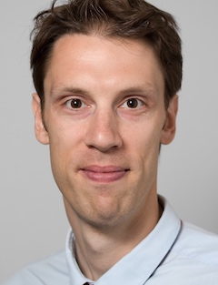

Invited Speakers

BOBjörn Ommer
LMU Munich
Professor of Computer Vision & Learning at Ludwig Maximilian University of Munich. His group's work on latent diffusion models underpins Stable Diffusion and much of today's generative image research.
 NM
NMNiloy J. Mitra
University College London · Adobe Research
Professor of Computer Graphics at UCL, where he leads the Smart Geometry Processing group, and Senior Research Scientist at Adobe Research. Works on geometry processing, shape analysis, and generative models for 3D content.
 RK
RKRanjay Krishna
University of Washington · Allen Institute for AI
Assistant Professor at the Paul G. Allen School and research lead at AI2. Creator of Visual Genome; his work spans vision-language models, multimodal reasoning, and human-AI interaction.
To Be Announced
Keynote 4
Our fourth keynote is awaiting confirmation and will be announced here shortly.